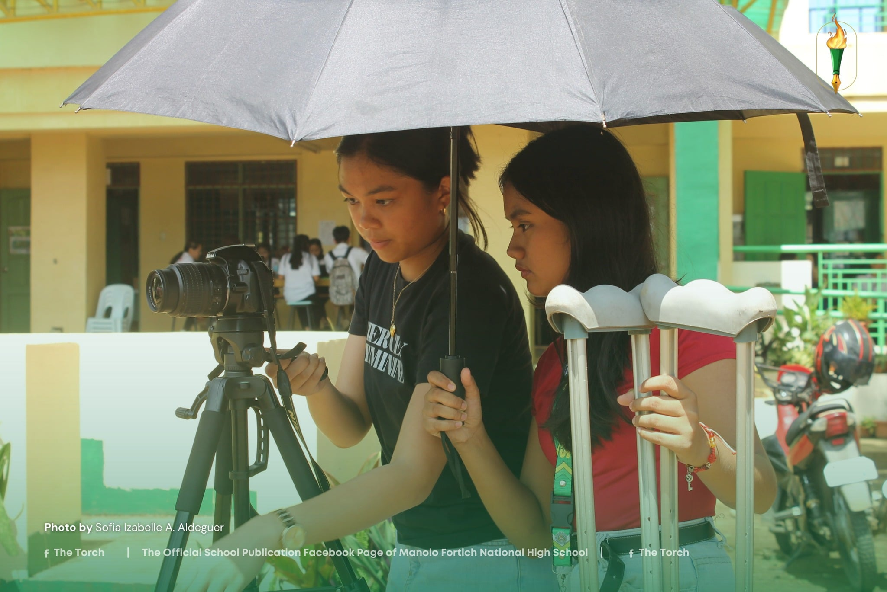
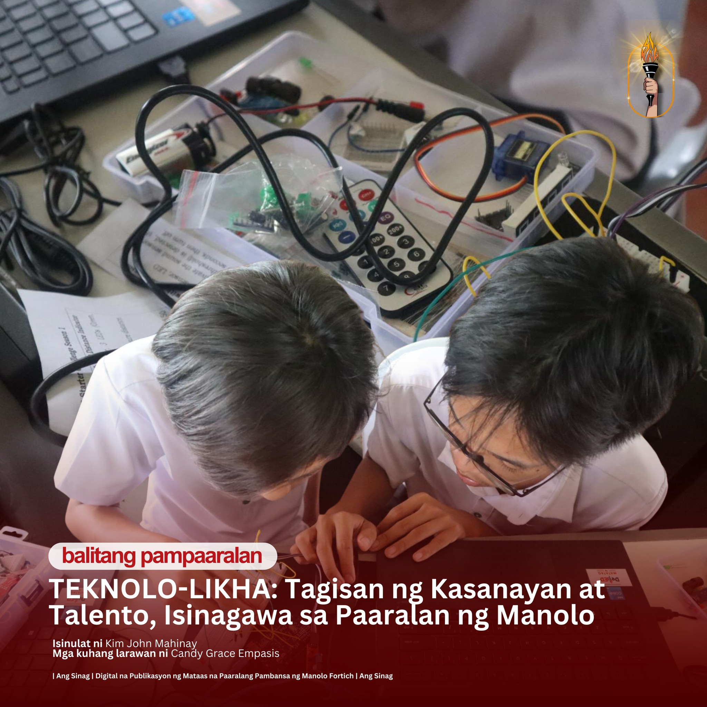
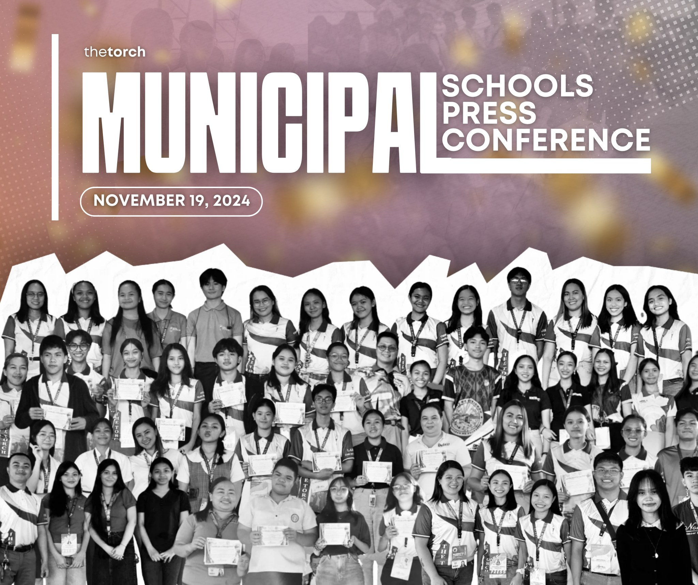
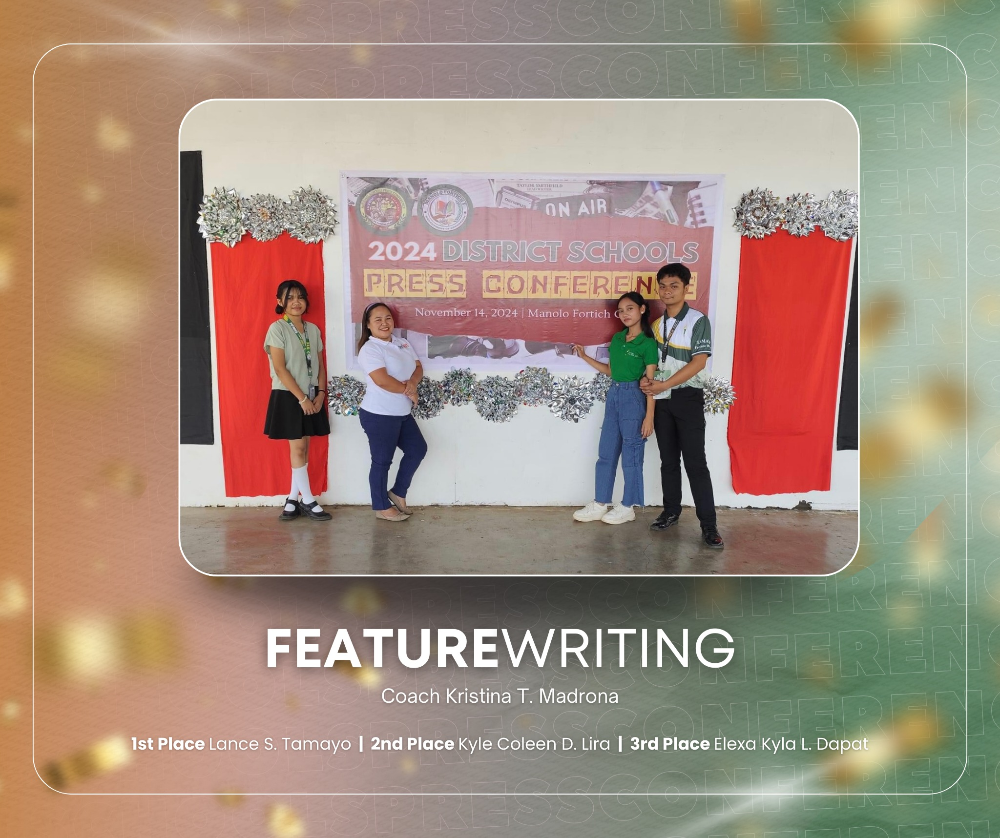

Newsroom baby of
Manolo Fortich
National High School:3
Home of the Spotless jowuls 0.0

Spotless Jewels Shine at the 2024 Municipal Festival of Talents

Opening the doors of creativity and staging unique talents in all forms, spotless jewels from Manolo Fortich National High School (MFNHS) unleash their passion, skill, and creativity during the 2024 Municipal Festival of Talents (MFOT) last November 8.
TEKNOLO-LIKHA: Tagisan ng Kasanayan at Talento

Mag-aaral sa MFNHS, nagtagisan ng galing at talento sa programming at pagbuo ng Robotics sa loob ng tatlong araw na patimpalak.
Louwella G. Sevilla and Vic Julia Cangke ruled the nine and eight ball billiard category on Friday, October 18, 2024, at Gamay Billiards Hall during the Municipal Athletic Meet 2024.
Manigong Bagong Taon mula sa aming mga Galileon!
From the depths of our hearts, Merry Christmas Eve Galileons!


Congratulations to all the outstanding 𝗧𝗵𝗲 𝗧𝗼𝗿𝗰𝗵 student journalists who excelled in the Municipal Schools Press Conference
2024 last November 19! Your dedication to truth and storytelling continues to inspire.
This is just the beginning—keep using your voice to connect with the masses and speak for the unheard.